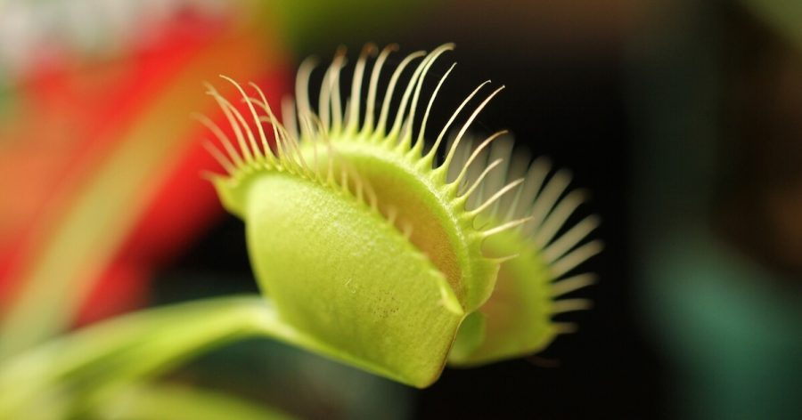

စင်ကာပူ နိုင်ငံက သုတေသီ တွေဟာ အပင်တွေနဲ့ ဆက်သွယ်နိုင်မယ့် စက်တစ်မျိုးကို တီထွင်နိုင် ခဲ့ကြပါတယ်။
စင်ကာပူ နိုင်ငံ နန်ယန်း နည်းပညာ တက္ကသိုလ် (Nanyang Technological University, Singapore) က သုတေသီ တွေဟာ အပင်တွေက ထုတ်လွှင့်တဲ့ သဘာဝ လျှပ်စစ်လှိုင်းတွေကို အသုံးချပြီး အပင်တွေနဲ့ ဆက်သွယ်ဖို့ ကြိုးစားခဲ့ ကြတာ ဖြစ်ပါတယ်။
သူတို့ဟာ အပင်တွေကို ဝါယာကြိုး အသေးလေး တွေနဲ့ ချိတ်ဆက်လိုက် ကြပါတယ်။ ဒီ ဝါယာကြိုး လေးတွေကနေ တဆင့် အပင်အတွင်းက ဖြစ်ပေါ်တဲ့ လျှပ်စစ် အချက်ပြ လှိုင်းတွေကို ဖမ်းယူ ကြပါတယ်။
ဒီလို ဖမ်းယူရုံတင် မကဘူး ဒီဝါယာကြိုး တွေကတဆင့်လဲ အပင်တွေ ဆီကို လျှပ်စစ် လှိုင်းတွေ ပြန်လည် ထုတ်လွှင့် ပေးခဲ့ ကြပါတယ်။
ဒါက ဘာနဲ့ တူလဲ ဆိုတော့ အပင်တွေနဲ့ အပြန်အလှန် စကားပြောတာနဲ့ ဆင်ဆင် တူနေပါတယ်။
ဒီမှာ မေးစရာ ရှိလာတာက အပင်တွေက ဘာနားလည်မှာ မို့လဲ ဆိုတဲ့ မေးခွန်းပဲ ဖြစ်ပါတယ်။
အပင်တွေက ထုတ်လွှင့်တဲ့ လျှပ်စစ် အချက်ပြ လှိုင်းတွေကို အသုံးပြုခြင်း အားဖြင့် ရရှိလာနိုင်တဲ့ အကျိုးကျေးဇူးတွေ အများကြီး ရှိပါတယ်။
ဥပမာ အပင်တွေမှာ ရောဂါ တစ်ခုခု မဖြစ်မီ ဘယ်လို အပြောင်းအလဲတွေ ဖြစ်လာလဲ ဆိုတာကို ကြိုတင် စောင့်ကြည့် နိုင်မှာ ဖြစ်ပါတယ်။ တချိန်ထဲမှာ အပင်တွေ ဆီလို သင့်လျှော်တဲ့ လျှပ်စစ် အချက်ပြလှိုင်းတွေ ပေးပို့ခြင်း အားဖြင့် အပင်ရဲ့ ရောဂါ ခုခံစွမ်းအား တိုးမြင့်လာအောင် ပြုလုပ်နိုင်မှာ ဖြစ်ပါတယ်။
“ကမ္ဘာ့ ရာသီဥတု ပြောင်းလဲမှုကြောင့် ကောက်ပဲ သီးနှံတွေ အထွက်နှုန်းကို အများကြီး ထိခိုက် လာနိုင်ပါတယ်။ အပင်တွေက ထုတ်လွှတ်တဲ့ လျှပ်စစ် အချက်ပြလှိုင်း တွေကို စောင့်ကြည့် ခြင်းအားဖြင့် အပင်တွေ ကြုံတွေ့ရတဲ့ ရောဂါ နဲ့ အခြား ချို့ယွင်းချက် တွေကို ကြိုတင် သိမြင် ထောက်လှမ်းနိုင်မှာ ဖြစ်ပါတယ်” လို့ ဒီ သုတေသနမှာ ဦးဆောင်တဲ့ ချန်ဇီဒေါင် (Chen Xiaodong) က ရှင်းပြပါတယ်။
သူဟာ နန်ယန် တက္ကသိုလ် Materials Science and Engineering ဌာနရဲ့ ဌာနမှူး ဖြစ်ပါတယ်။
“စိုက်ပျိုးရေး လုပ်ငန်းတွေမှာ ဒီနည်းလမ်းကို အသုံးပြုမယ် ဆိုရင် လယ်သမား တွေအနေနဲ့ ရောဂါ မဖြစ်ခင် ကြိုတင် သိရှိနိုင်မှာ ဖြစ်ပါတယ်” လို့ သူက ဆက်ရှင်းပြပါတယ်။
ဒီလို ကြိုတင် သိမြင် တဲ့အတွက် ကြိုတင် ကာကွယ်မှုတွေ ပြုလုပ်နိုင်တာမို့ သီးနှံ အထွက်နှုန်းလဲ တိုးတက်လာအောင် စွမ်းဆောင်နိုင်မှာ ဖြစ်ပါတယ်။
ဒါပေမယ့် အခုလို အပင်တွေနဲ့ ဆက်သွယ်မှုကို လူတွေနဲ့ တိရစ္ဆာန်တွေ အချင်းချင်း ဆက်သွယ်မှု မျိုးနဲ့တော့ မမှားသင့်ပါဘူး။
“လူအများက ‘အပင်နဲ့ ဆက်သွယ်တယ်’ လို့ ဆိုရင် အပင်တွေဟာ သူတို့ ဘာလုပ်နေလဲ ဆိုတာကို သိတဲ့ အသိစိတ် ရှိတယ် ဆိုတဲ့ အမြင်မှား ဝင်လာတတ်ကြပါတယ်။ ဒီလို အမြင်ဟာ သာမန် လူတွေတင် မကပါဘူး။ ရုက္ခဗေဒ ပညာရှင် တွေတောင် ဒီလို အမြင်မျိုး ဝင်တတ် ကြပါတယ်” လို့ ဝါရှင်တန် တက္ကသိုလ်က ရုက္ခဗေဒ ပညာရှင် ဖြစ်သူ အဲလစ်စဘက် ဗင် ဗော်ကန်ဘာဂ် (Elizabeth Van Volkenburgh) က ရှင်းပြပါတယ်။
တကယ်က အပင်က “သိ” တာထက် အာရုံခံ ပြီး ပြန်လည် တုန့်ပြန်တယ် လို့ ပြောရင် ပိုမှန်ပါမယ်။
ဒီလို အပင်တွေက အာရုံခံပြီး ပြန်လည် တုန့်ပြန်တဲ့ လျှပ်စစ် အချက်ပြ တွေကို ဖမ်းယူဖို့ လျှပ်စစ် အာရုံခံ ကိရိယာ ကို တီထွင် ခဲ့တာပါ။ ဒီ ကိရိယာကို ဆေးပညာမှာ နှလုံး လျှပ်စစ်တိုင်းတဲ့ ECG စက်ရဲ့ သဘောကို အခြေခံပြီး တည်ဆောက်ခဲ့ ကြတာ ဖြစ်ပါတယ်။
ဒီ အာရုံခံဝါယာ ကြိုးမျှင်လေးကို Venus fly trap အပင်ရဲ့ အရွက်မှာ သွားချိတ်ပြီး စမ်းသပ် ခဲ့ကြပါတယ်။
ဒီ ဝါယာမျှင် လေးဟာ အချင်း ၃ မီလီမီတာပဲ ရှိပါတယ်။ ဒီ ဝါယာမျှင် လေးကို Venus flytrap အပင်ရဲ့ အရွက်မှာ သွားချိတ်လိုက်တဲ့ အခါမှာတော့ ဒီ အရွက်ကနေ ထုတ်လွှင့်တဲ့ လျှပ်စစ် အချက်ပြ လှိုင်းတွေကို အောင်မြင်စွာ ဖမ်းယူ နိုင်ခဲ့ ကြပါတယ်။
ဒါပေမယ့် အပင်တွေနဲ့ ဆက်သွယ်မှုဟာ တစ်လမ်းသွား သက်သက် မဟုတ်ပါဘူး။ အပင်တွေ ဆီကနေ အချက်ပြ လှိုင်းတွေ ဖမ်းယူသလိုပဲ အပင်တွေ ဆီကိုလဲ အချက်ပြ လှိုင်းတွေ ပြန်လည် ပို့လွှတ် နိုင်ပါတယ်။
ဒီ အတွက် သုတေသီ တွေဟာ စမတ်ဖုန်း တစ်လုံးကို အသုံးချခဲ့ ကြပါတယ်။ စမတ်ဖုန်း ကနေပြီး ဝါယာကြိုး အတိုင်း အချက်ပြလှိုင်းတွေ ပို့လွှတ်ပြီး Venus flytrap အပင်ရဲ့ အရွက်တွေ ပိတ်သွားအောင် ပြုလုပ် နိုင်ခဲ့ကြပါတယ်။
နောက်တဆင့် အနေနဲ့ ဒီ အပင်ကို စက်ရုပ် လက်တံ တစ်ခုနဲ့ ချိတ်ဆက်လိုက် ကြပါတယ်။
ဒီနည်းနဲ့ စားပွဲပေါ်က ပစ္စည်း အသေးလေး တွေကို ကောက်ယူနိုင်တဲ့ အပင် နဲ့ စက်ရုပ်စပ် ကိရိယာ တစ်ခုကို အောင်မြင်စွာ တီထွင် နိုင်ခဲ့ ကြပါတယ်။
အပင်တွေဟာ တစ်ပင်နဲ့ တစ်ပင် သဘောသဘာဝ မတူပါဘူး။ ဒါပေမယ့် အခု ကိရိယာ ကိုတော့ အပင် အမျိုးအစား မျိုးစုံမှာ တပ်ဆင်နိုင်မှာ ဖြစ်ပါတယ်။
ဒီ နည်းပညာကို စက်ရုပ် နည်းပညာနဲ့ ပေါင်းစပ် အသုံးပြုခြင်း အားဖြင့် အပင်တပိုင်း စက်ရုပ်တပိုင်း ကိရိယာ တွေ တီထွင် လာနိုင်ကြမှာ ဖြစ်ပါတယ်။ ဒီ အပင် စက်ရုပ် တွေကို စိုက်ပျိုးရေးနဲ့ အခြား လုပ်ငန်း မျိုးစုံမှာ တွင်တွင် ကျယ်ကျယ် အသုံးပြု လာနိုင်မယ်လို့ ပညာရှင် တွေက ယုံကြည် ကြပါတယ်။
Ref: Researchers have developed a “plant communication” device | Free Think
အပင်တွေနဲ့ ဆက်သွယ်နိုင်မယ့် နည်းလမ်း စင်ကာပူ ပညာရှင်များ တီထွင်

January 23, 2023
Other Posts
- ဆလိုဗက် နိုင်ငံထုတ် ၁၅၅မမ Zuzana 2 ယာဉ်တင် ဟောင်ဝစ်ဇာ
- နျူထရွန် ကြယ် နှစ်လုံးတိုက်မိပြီး ဖြစ်လာတဲ့ ‘သံလိုက်ကြယ်’
- စကြာဝဠာ ခေတ်ဦး ဂလက်ဆီ တစ်ခုမှာ ရေတွေ့
- ပြင်ပကမ္ဘာက သက်ရှိတွေကို လေထုညစ်ညမ်းမှုမှ ရှာဖွေရန် နာဆာ အဆိုပြု
- အိုင်းစတိုင်း လက်စွပ်
- မစ်ကီးဝေး ဂလက်စီ ထဲက အကြီးဆုံးကြယ်
- ဖလက်ရှ်ကတ် (Flash Card) သုံးပြီး ဖိုးနစ် (Phonics) စသင်ရအောင်
- လေယာဉ် ဘယ်လိုလေထဲ ပျံသလဲ
- ကမ္ဘာဆီ တည့်တည့်ချိန်ရွယ်လာတဲ့ Black Hole ကြီး
- ကြယ်ကြွေတယ် ဆိုတာဘာလဲ